Presentation Model в Windows
Справка и основные термины
Для понимания материала важно разобраться в базовых понятиях:
- DWM (Desktop Window Manager) – композитор рабочего стола Windows. Простыми словами: DWM берет картинки всех открытых окон, накладывает их друг на друга (композиция) и отправляет итоговый результат на вывод. Главный нюанс: DWM всегда работает с вертикальной синхронизацией, что добавляет как минимум один кадр задержки, если приложение проходит через него.
- DXGI (DirectX Graphics Infrastructure) – это низкоуровневая подсистема, которая управляет перечислением адаптеров, созданием SwapChain и презентацией кадров. Начиная с DirectX 9Ex и во всех последующих API (DirectX 10, 11 и 12), именно DXGI отвечает за вывод изображения на экран. Исключением является только DirectX 9, который использует собственную, старую презентации и не умеет работать с DXGI напрямую.
- SwapChain (цепочка буферов) — это механизм, с помощью которого Direct3D приложение выстраивает последовательность отрисованных кадров для вывода на дисплей. Возможно, вы слышали о двойной или тройной буферизации, вертикальной синхронизации (V-Sync). Все это – свойства DXGI SwapChain, наряду с разрешением кадрового буфера, форматом, цветовым пространством.
Presentation Model
Это определение механизма (пути) передачи отрендеренных кадров игры на дисплей.
В DXGI существует четыре различных swap-эффекта, которые игра может использовать для своей цепочки буферов: Discard (Flip), Sequential (Flip), Discard (BitBlt) и Sequential (BitBlt). Окончательный выбор сценария определяется используемым приложением SwapEffect и целым рядом оптимизаций.
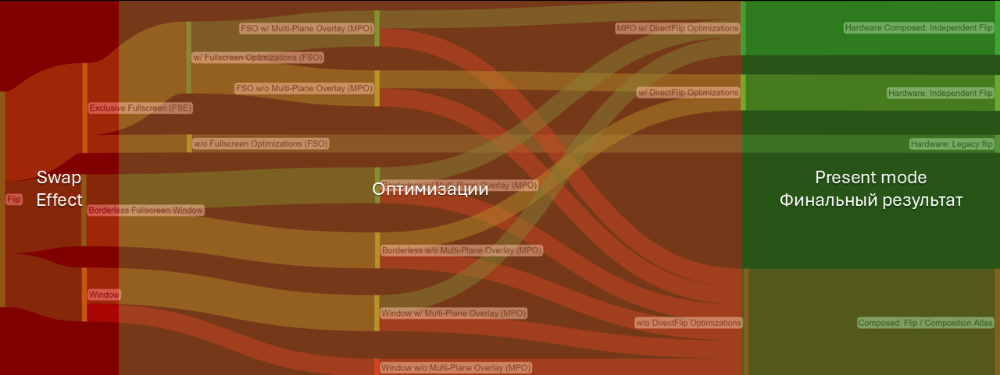
Звучит немного запутанно, но суть в следующем: игра может настраивать разные swap effects для своей цепочки буферов swapchain. Swap Effect определяет, как именно отрисованный кадр должен выводиться на экран с точки зрения самой игры. Однако реальная модель представления, которая будет использована по факту, зависит от множества факторов, а не только от выбранного эффекта.
История Presentation Model
Windows 7
Во времена Windows 7 основными методами были оконный BitBlt и Полноэкранный Flipping. Долгие годы среди геймеров жило золотое правило: хочешь минимальный инпут-лаг и плавность – играй только в «Эксклюзивном полном экране».
Оконный режим был синонимом тормозов. Причина крылась в ограничениях модели BitBlt: вместо того чтобы попасть в DWM напрямую, игра использовала промежуточную поверхность для копирования кадра. Лишняя операция копирования – это лишняя нагрузка на видеопамять и заметная задержка, а еще плюсом сверху DWM добавлял кадр задержки композиции.
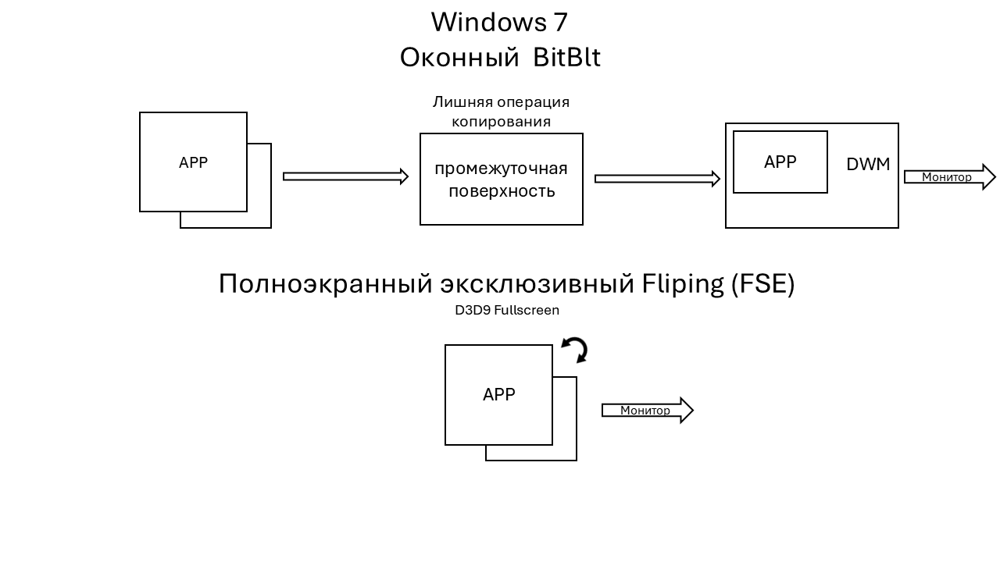
FSE (Full-Screen Exclusive): В этом режиме игра брала управление выводом на себя, полностью обходя DWM. Композитор фактически переставал отрисовывать рабочий стол для этого монитора. Это давало максимальную скорость, но лишало возможности мгновенно сворачивать игру и использовать оконные оверлеи.
Революция Windows 8
С обновлением Windows 8 появился Оконный Flip. Вместо копирования кадра (как в BitBlt), система и приложения теперь просто обмениваются ссылками на области в видеопамяти. Это убрало лишнюю операцию копирования, но задержка самой композиции DWM всё еще оставалась.
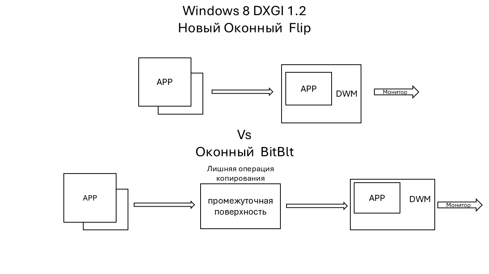
Вершина оптимизации DirectFlip и iFlip
Итогом этих улучшений стала технология DirectFlip. Она позволяет DWM «отступить на шаг назад» и пропустить кадр игры напрямую к контроллеру дисплея, минуя этап общей композиции DWM.
При удачной активации DirectFlip программа переключается в режим Independent Flip (iFlip Immediate*). Формально сохраняется оконный режим, однако по производительности и отклику это сопоставимо с классическим полноэкранным доступом (FSE).
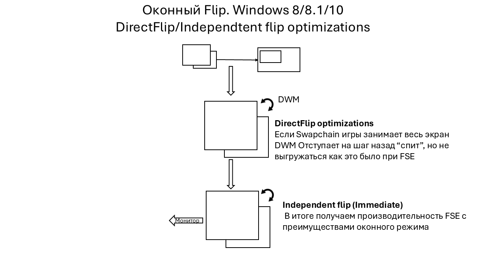
Для активации стандартных оптимизаций DirectFlip необходимо, чтобы swapchain игры соответствовал разрешению рабочего стола (покрывал всю область экрана) и над окном игры не располагались другие окна или оверлеи.
Оптимизации Windows 10 и 11 для старых игр
Первая из них: FSO (Full-Screen Optimization) — функция, добавленная в Windows 10, которая выполняет очень важную задачу для пользователя: она преобразует любую игру, использующую полноэкранный эксклюзивный Flipping (FSE), в оконный Flip. Это преобразование позволяет использовать все преимущества independent flip. Ключевой особенностью работы FSO является эмуляция полноэкранного режима (eFSE), достигаемая за счет изменения системного разрешения и частоты обновления экрана в соответствии с требованиями запущенной игры. Так же может переобразовать старый D3D9 Fullscreen
Вторая: Optimizations for windowed games — функция, добавленна в Windows 11 22H2, которая переводит старые игры (DirectX 10-11 ), использующие оконный BitBlt, на современный оконный Flip. Это позволяет таким играм также воспользоваться всеми преимуществами independent flip. НЕ работает на D3D9
Следовательно, в современной Windows 11 со всеми оптимизациями модель оконного Flip применяется ко всем играм, работающим через DXGI. И если игра находится в independent flip, то она получает наилучшую производительность.
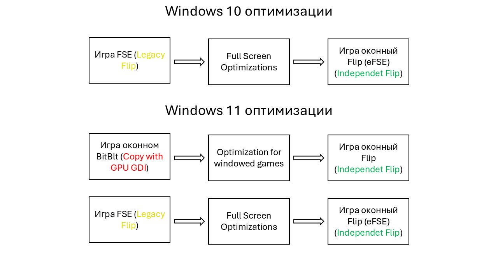
Multi-Plane Overlay
Multi-Plane Overlay (MPO) – подразумевает использование дополнительных выделенных аппаратных плоскостей сканирования в GPU, на которые могут подаваться кадры приложения, а видеокарта затем самостоятельно выводит их на дисплей, тем самым беря на себя работу композиции.
Это позволяет играм обходить DWM в различных смешанных и оконных режимах, тем самым устраняя задержку отображения, которая в противном случае возникла бы. С MPO вам не обязательно соблюдать правила активации стандартного DirectFlip.
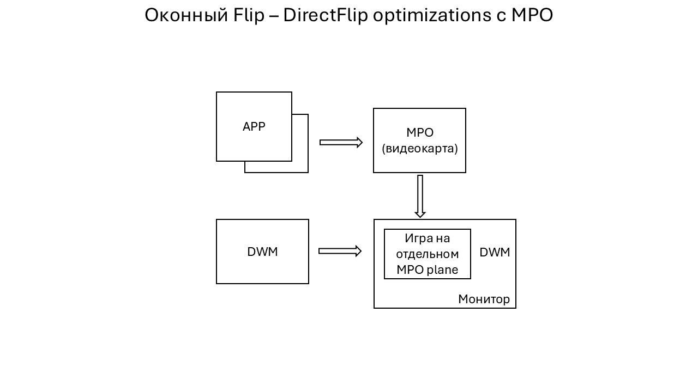
Минимальные требования по видеокартам:
- AMD: Radeon RX Vega (GCN 5.0)
- Intel: HD Graphics 510-515 (Core 6th gen)
- Nvidia: GTX 16/RTX 20 series (Turing)
Также поддержка зависит от конфигурации графического процессора и дисплея. Необычные настройки драйверов или дисплея могут отключить поддержку MPO, например, пользовательское масштабирование графического процессора (NIS/RSR/целочисленное и т. д.). Это мы разберем в отдельной теме с проблемами MPO и Composed:Flip.
Presentation Model на практике
Теперь, когда все оптимизации рассмотрены, давайте вернемся к анализу различных сценариев Presentation Model.
В схемах было сделано следующее упрощение: даже при включенной поддержке MPO на некоторых системах игра может по-прежнему отображаться как использующая «Hardware: Independent Flip», хотя в этом случае она, как правило, ведет себя и функционирует точно так же, как «Hardware Composed: Independent Flip».
Flip (D3D11/D3D12*)
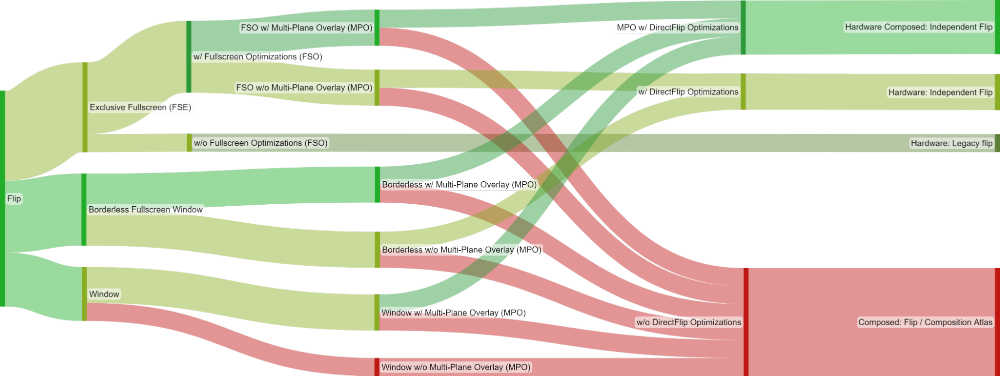
Цветные столбцы на графике обозначают последовательные этапы, которые подробно описаны в этом списке.
Для игры, использующей свап эффект Flip, выбор конкретной модели представления зависит от нескольких факторов:
- 1. Запрошенный режим отображения игры.
- (*) Раздел об «Эксклюзивном полноэкранном режиме» (FSE) не применим к играм на DirectX 12, так как их «эксклюзивный режим» является лишь «эмулированным» (eFSE). В этом режиме рабочий стол Windows временно меняет разрешение, частоту обновления и цветовое пространство на те, что запросила игра, но в остальном он работает точно так же, как обычное полноэкранное окно без рамок (borderless fullscreen).
- 2. Переключатель «Оптимизация во весь экран» (FSO) (актуально только для игр, запущенных в режиме эксклюзивного полноэкранного режима (FSE)).
- 3. Наличие поддержки многоплоскостного наложения (MPO) на аппаратном уровне.
- 4. И, наконец, соответствие цепочки буферов (swapchain) и системы необходимым требованиям для активации оптимизации DirectFlip:
- DirectFlip: Буферы вашей цепочки соответствуют размерам экрана, а клиентская область окна закрывает весь экран. Вместо использования цепочки буферов DWM для вывода на экран используется цепочка буферов самого приложения.
- DirectFlip с panel fitters (требуется MPO): Клиентская область окна закрывает экран, а размеры буферов цепочки находятся в пределах определенного аппаратного коэффициента масштабирования (например, от 0.25x до 4x) относительно экрана. Для масштабирования буфера при передаче на дисплей используется GPU.
- DirectFlip с многоплоскостным наложением (требуется MPO): Буферы вашей цепочки находятся в пределах определенного аппаратного коэффициента масштабирования относительно размеров окна. DWM резервирует выделенную аппаратную плоскость развертки для вашего приложения, которая затем выводится и, при необходимости, растягивается на подобласть экрана с альфа-смешиванием.
BitBlt (D3D11)
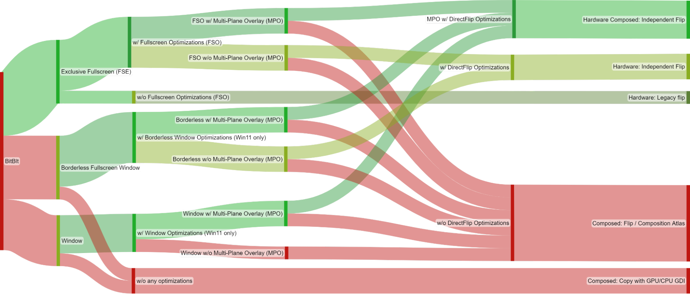
Для игры, использующей устаревший эффект BitBlt swap, выбор конкретной модели представления зависит от нескольких факторов:
Цветные столбцы на графике обозначают последовательные этапы, которые подробно описаны в этом списке.
- 1. Запрошенный режим отображения игры.
- 2. Переключатель «Оптимизация во весь экран» (FSO) (актуально только для игр, запущенных в режиме эксклюзивного полноэкранного режима (FSE)).
- Переключатель «Оптимизация для оконных игр» (доступен в Windows 11 и актуален только для игр, работающих в одном из двух оконных режимов).
- 3. Наличие поддержки многоплоскостного наложения (MPO) на аппаратном уровне.
- 4. И, наконец, соответствие цепочки буферов (swapchain) и системы необходимым требованиям для активации оптимизации DirectFlip:
- DirectFlip (требуется FSO или оптимизация оконного режима): Swapchain игры соответствуют размерам экрана, а клиентская область окна закрывает весь экран. Вместо использования DWM для вывода на экран используется Swapchain самого приложения.
- DirectFlip с panel fitters (требуется MPO + FSO/оптимизация оконного режима): Клиентская область окна закрывает экран, а размеры буферов цепочки находятся в пределах определенного аппаратного коэффициента масштабирования (например, от 0.25x до 4x) относительно экрана. Для масштабирования буфера при передаче на дисплей используется аппаратное обеспечение развертки GPU.
- DirectFlip с многоплоскостным наложением (требуется MPO + FSO/оптимизация оконного режима): Буферы вашей цепочки находятся в пределах определенного аппаратного коэффициента масштабирования относительно размеров окна. DWM резервирует выделенную аппаратную плоскость развертки для вашего приложения, которая затем выводится и, при необходимости, растягивается на подобласть экрана с альфа-смешиванием.
В итоге
Все игры, работающие через DXGI (от DirectX 9Ex до DirectX 12), будут использовать Flip-модель презентации при условии, что у вас Windows 11 и включены ВСЕ Оптимизации.
При отсутствии аппаратной поддержки MPO — крайне важно следовать правилам для активации стандартного Direct Flip.
Наличие MPO дает вам полную свободу. Можете устанавливать любое разрешение, изменять область Swapchain приложения и накладывать оверлеи, при этом приложение продолжит стабильно работать в режиме Independent Flip.
Для старых проектов на базе классического DirectX 9 потребуется либо активация полноэкранного режима в сочетании с FSO, либо — что гораздо лучше — использование трансляторов DXVK или dgVoodoo2. Такой перевод на современный API позволит задействовать Flip-модель презентации и наслаждаться преимуществами оконного без рамок/полноэкранного режима вместо компромиссного FSO(eFSE).
| Present Mode | Описание |
|---|---|
| Hardware: Independent Flip | Указывает на то, что приложение использует flip модель, не владеет экраном эксклюзивно, но все равно напрямую переключает отображаемую поверхность каждый кадр, минуя лишний этап DWM. |
| Hardware Composed: Independent Flip* |
Указывает на то, что приложение использует flip модель и ему выделена аппаратная плоскость наложения минуя лишний этап DWM. |
| Hardware: Legacy Flip | Указывает на то, что приложение захватило полное управление экраном (эксклюзивный полноэкранный режим) и переключает отображаемую поверхность каждый кадр. |
| Composed: Flip | Указывает на то, что приложение работает в оконном режиме, использует Flip модель и передает свои поверхности DWM для последующей композиции (1+ кадр задержки в любом случае). |
| Composed: Copy with GPU GDI | Указывает на то, что приложение работает в оконном режиме и использует Bitblt (1+ кадр задержки в любом случае). |
Режимы окна в современных играх
Не всегда игры называют их правильно, но вот список признаков, по которым вы сможете понять какой тип используется:
- Эмулированный Полноэкранный эксклюзивный(dx12) / игра через FSO — игра находится в оконном Flip, в котором рабочий стол Windows просто временно меняет разрешение, частоту обновления и цветовое пространство на те, что запросила игра. Полезно, если нет MPO и хочется играть в разрешении ниже рабочего стола. Создатели игр всё реже оставляют этот режим в настройках, поскольку он уступает обычному оконному.
- Полноэкранное окно — Окно игры масштабируется до разрешения системы. Самый лучший вариант для натива / для не натива если хочется растяг, но тогда MPO обязательно в этом случае.
- Безрамочное окно — Окно игры выводится как есть, без масштабирования и рамок (самый лучший вариант для натива).
- Рамочное окно — Игра выводится как обычное окно с рамками.
- Unity/Unreal Engine окно — Эти движки имеют особенный режим окна, в котором swapchain игры всегда зависим от системного разрешения. Изменение разрешения в настройках игры меняет разрешение рендера, но не swapchain. Поэтому в большинстве игр на UE нельзя сменить разрешение в оконном режиме.
Мониторинг Present mode
Для мониторинга лучшим вариантом будет RTSS.
- Скачиваем и устанавливаем актуальную версию RTSS с официального сайта
- Скачиваем файл оверлея и кидаем его в C:\Program Files (x86)\RivaTuner Statistics Server\Plugins\Client\Overlays
- Заходим в RTSS, нажимаем кнопку Setup:
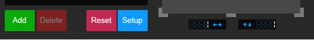
- Заходим на вкладку Plugins, ставим галочку на OverlayEditor и заходим в него, нажав два раза (или Setup снизу):
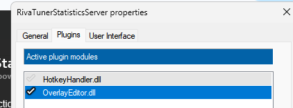
- Далее Layouts -> load -> выбираем скачанный .ovl:
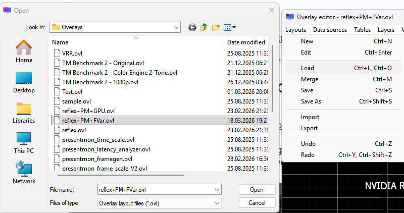
- Закрываем OverlayEditor, нажимаем Apply и заходим в игру.
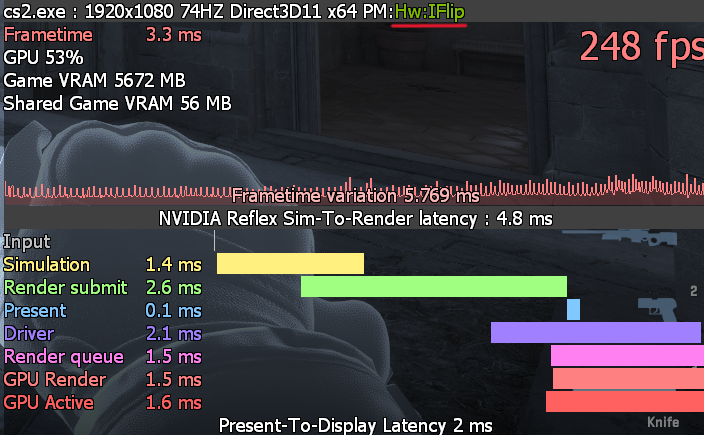
Presentation Model:
👍 Минимальная задержка если показывает
- Hardware: Independent Flip
- Hardware Composed: Independent Flip
- Hardware: Legacy Flip
- Hardware: Legacy Copy to front buffer
👎 Нежелательная задержка
- Composed: Flip
- Composed: Copy with GPU GDI
- Composed: Copy with CPU GDI
Reflex Sim-to-Render latency — Отражает временной интервал между началом Simulation до завершения кадра GPU.
Также Reflex маркеры дают подробную информацию про pipeline игры от Sim до завершения Gpu Render, но не видят, что происходит на этапе композиции (Composite).
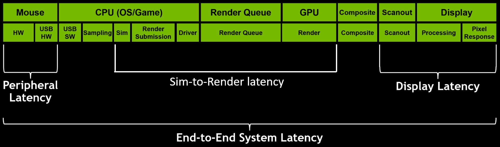
Present-To-Display — это время между вызовом функции Present() и изменением буфера кадра (отправкой на монитор).
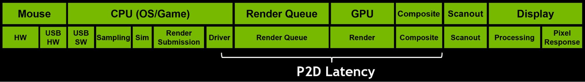
Проверка работы MPO
- Скачиваем и устанавливаем SpecialK
- Запускаем SpecialK (SKIF), заходим во вкладку hardware
- Смотрим работает ли MPO
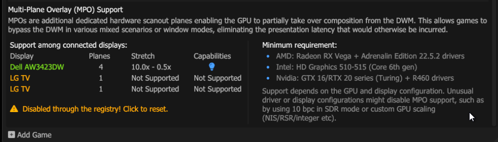
SKIF сразу предложит вам сбросить настройки в реестре, если вы наслушались оптимизаторов 😊
Нажав ПКМ по области MPO, вы можете сделать рефреш в реалтайме.
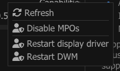
Проверка в игре
Используя RTSS оверлей, откройте xbox game bar (Win+G), если игра осталась в independent flip — значит MPO работает.

Без MPO

С MPO
Проблемы MPO и Composed Flip
Если ваша видеокарта обладает аппаратной поддержкой MPO, но в SpecialK она не отображается — вероятнее всего, проблема вызвана одной из следующих причин:
Чаще всего проблемы возникают из-за избыточных манипуляций пользователя: попытки самостоятельно что-то оптимизировать, удалить или перенастроить в драйвере дают обратный эффект и лишь ухудшают ситуацию.
- Выключение FSO и Optimizations for windowed games. Категорически не рекомендуется этого делать! Отключив их, вы навсегда заблокируете старым играм путь к Flip-модели.
- Не трогайте вкладку Adjust Desktop Size and Position без надобности. Изменение тут может сломать работу MPO.
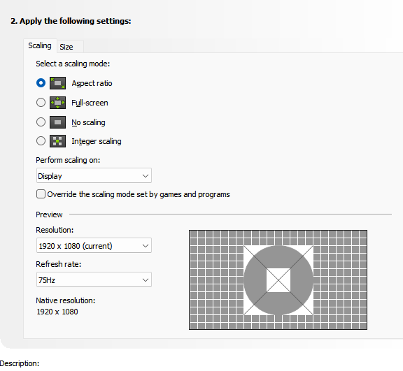
Настройки по умолчанию - Выключен MPO через реестр по советам из интернета.
- Запись и мгновенный повтор Nvidia APP/AMD Adrenaline с галочкой "Запись рабочего стола" ломает работу MPO.
- Не используйте NIS (Драйверный апскейлер). Включение его сразу ломает MPO по всей системе.
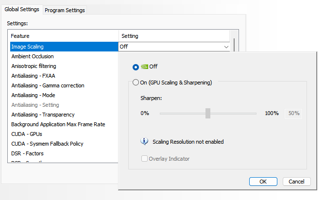
- Драйвер Nvidia назначает все MPO плейны только на 1 монитор, и ваш основной монитор может остаться без них.
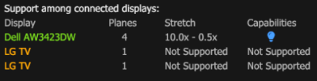
Для того чтоб вернуть MPO на основной монитор, надо сделать его главным в NVCP.
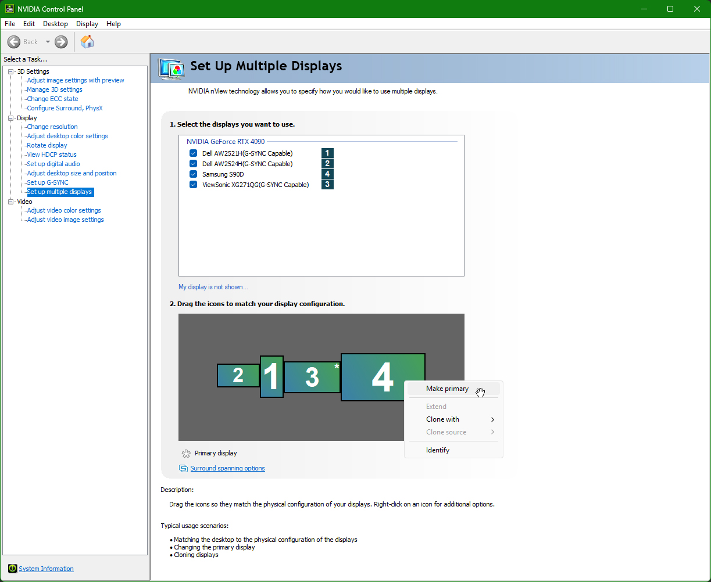
- Оверлей Discord ломает MPO и VRR.
- RTX Video Super Resolution отключает MPO .
- RTX Video HDR отключает MPO, когда проигрывается видео.
- Проигрывание 4К видео в браузере на некоторых системах может сломать MPO.
- DSC (Display Stream Compression) на видеокартах Nvidia ниже RTX 5000 отключает MPO. Калькулятор DSC.
- Для старых проектов, которые используют в нативе BitBlt, переключение режима окна провоцирует переход в Composed Flip, поскольку такие приложения не передают resizebuffers в процессе смены. Вам нужно перезайти в игру или изменить разрешение туда-обратно.
- Надпись активации Windows работает как оверлей и вызывает Composed Flip, если нет MPO.
- 10-bit в SDR ломает MPO, если вы на старой винде. Это было исправлено в Win 11 24H2 и актуальных драйверах Nvidia.
- Оверлей overwolf может вызвать Composed Flip, если у вас нет MPO.
- Ноутбуки с MUX-Switch. При переключении в режим дискретной графики (dGpu only) на некоторых ноутбках теряется поддержка MPO.
- Два монитора (WIP) ...........
- Отключен Игровой Режим Windows и Xbox Gamebar. Они играют важную роль в активации Game mode плана электропитания, Optimizations for windowed games и Windows VRR .
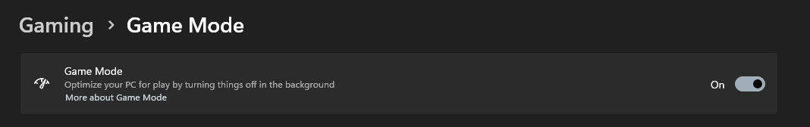
Если игра не распозналась, то в Xbox Gamebar можно это сделать принудительно.
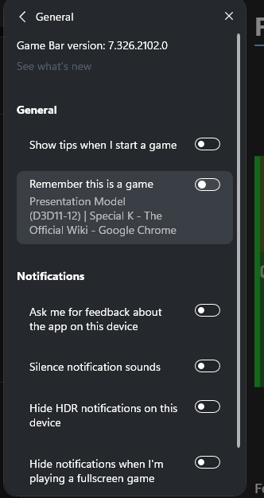
(DL)Dsr
Поскольку (DL)DSR отключает MPO, крайне важно строго соблюдать правила стандартного DirectFlip.
Чтобы избежать режима composed:flip, обязательно устанавливайте (DL)DSR-разрешение в настройках Windows до запуска игры.
OpenGL/Vulkan на DXGI (WIP)
Нативно в Windows Opengl и Vulkan игры не работают по логике DXGI
📚 Источники и полезные ссылки
- DirectX Developer Blog: For best performance, use DXGI flip model
- Special K Wiki - Presentation Model
- DirectX 12: Presentation Modes In Windows 10
- SwapChain Science | Special K - The Official Wiki
- The Care and Feeding of Modern Swap Chains (part 3) | Games for Windows and the DirectX SDK blog